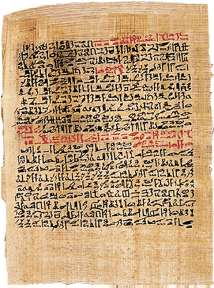
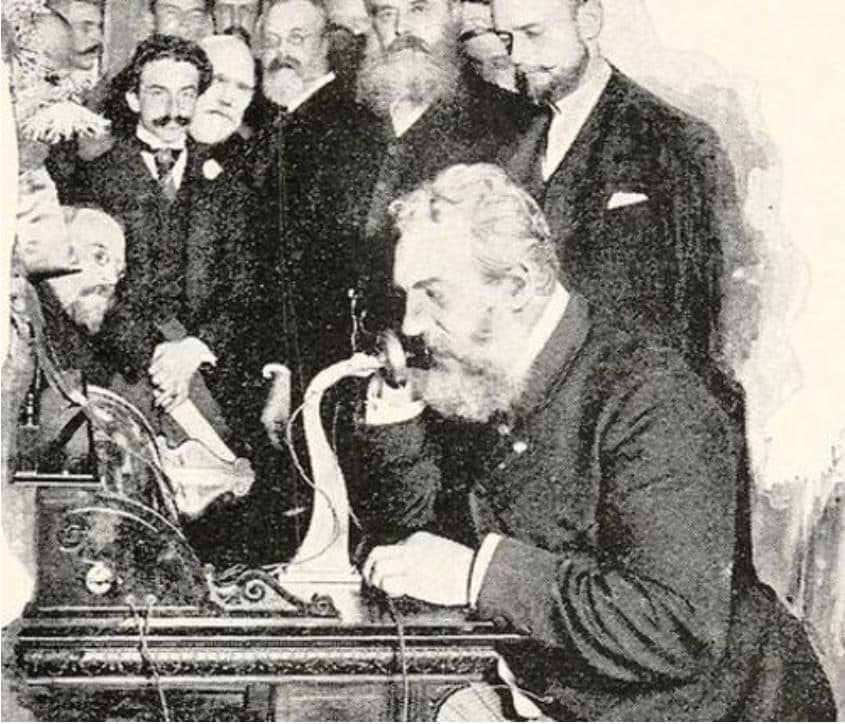

Realizado por:
Alexander Yancis
Como Experto en el Ministerio de Economía
Gaby Sec
Como Experta en el Ministerio de Educacion
Bryan Sula
Como Experto en el Ministerio de Finanzas Públicas
se busca!, vivo o muerto!
Cuadro comparativo de Guatemala y Alemania
| Aspecto | Guatemala | Alemania |
|---|---|---|
| Salud Pública | Servicios limitados, acceso desigual, infraestructura insuficiente. | Sistema de salud universal con alta cobertura y tecnología avanzada. |
| Educación Pública | Calidad variable, alta deserción escolar, recursos limitados. | Educación gratuita y de alta calidad, acceso a recursos y tecnología. |
| Transporte Público | Infraestructura deficiente, cobertura limitada, problemas de mantenimiento. | Sistema de transporte eficiente, extenso y bien mantenido (trenes, autobuses, metro). |
| Suministro de Agua | Cobertura desigual, problemas de calidad en áreas rurales. | Agua potable de alta calidad disponible en todo el país. |
| Energía Eléctrica | Cobertura amplia en áreas urbanas, cortes frecuentes en áreas rurales. | Suministro eléctrico estable, cobertura casi total, uso de energías renovables. |
| Seguridad Pública | Altos índices de criminalidad, recursos limitados para la policía. | Bajos índices de criminalidad, policía bien entrenada y equipada |
| Servicios Sociales | Programas limitados, enfoque en asistencia básica. | Amplia red de servicios sociales, incluyendo subsidios, seguros y apoyo para desempleados. |
| Infraestructura Digital | Baja penetración de internet, velocidad limitada, acceso desigual. | Alta penetración de internet, red de fibra óptica avanzada, acceso universal. |
| Gestión de Residuos | Sistemas de recolección irregulares, baja tasa de reciclaje. | Sistema de gestión de residuos eficiente, alta tasa de reciclaje. |
Prehistoria e historia
Indise
1.Prehistoria2.Historia
3.Edad Contemporanea
4.Origenes
5.Caracteristicas
6.consecuencias
¿Que es la Prehistoria y la Historia?
La Prehistoria y la Historia es un periodo de tiempo que empieza desde los primeros humanos en habitar la tierra, hasta lo que es hoy en dia, es decir, todo aquello que se vivio en el pasado antes de la llegada de cristo (Prehistoria) y todo aquello que paso despues de la llegada de cristo (Historia)
La prehistoria y la historia nos ayuda (a cierto punto) llegar a entender como se hacian las cosas antes y como el ser humano fue evolucionando y creando nuevas cosas, desde la primera interaccion con el fuego, hasta lo que es hoy en dia "La tecnologia"; como anteriormente vivian, como hallaban nuevas cosas y el como evolucionaban, creando objetos para su veneficio propio.

Prehistoria
La prehistoria inicia por los primeros humanos en el mundo (Los cavernicolas) Hace mas de 2.5 millones de años. ellos tenian pocos recursos sobrevivian cazando animales y cubrise en dentro de cuevas.
Segun informacion sacada de google los cavernicolas descubrieron el fuego en el año 500,000 a.C El fuego lo utilizaban como fuente de luz o tambien para calentarse en momentos de frio, el fuego fue tambien utilizado para poder cocinar algunos alimentos, hoy dia no se sabe como fue que descubrieron que podian cocinar con fuego; a mi punto de vista, osea, mi comentario personal, es que a lo mejor a algun cavernicola se le habra caido la carne en el fuego cuando estaba a punto de comerlo
los cavernicolas solian fabricar sus propias herramientas a base de piedra, empezaron a crearlas en el año 120,000 a.C por eso, esta fase de la prehistoria fue nombrada como "La edad de piedra"; Pero la piedra no es el unico recurso que utilizaron para crear herramientas tambien se utilizaron materiales como:
- Huesos
- Fibras
- Cuero
- Madera
Estos materiales fueron de gran ayuda para ellos, para poder crear: arcos, flechas, hoces de piedra, azadas, hachas pulimentadas, molinos, morteros, cucharas, entre otros. Tambien gracias a ello se origino la ceramica y el tejido
En el año 9000 a,C descubrieron el cobre, material que les sirvio para crear muchisimas cosas y que al dia de hoy se siguen creando, con la llegada del cobre (Segun google) crearon los punzones, puñales, escoplos, sierrras y puntas de flechas.
La escritura se origino en Mesopotamia y Egipto y china, aproximadamente un siglo antes del año 3000 a.C La escritura creado en Oriente Medio y Egipto se llego rapidamente a las areas culturales de los que estaban cerca, esto lo hicieron con tal de guardar informacion sin limite de cantidad o duracion, gracias a la escritura muchos empezaron a comunicarse por este medio (Cartas)
Historia
La historia comienza despues de la llegada de cristo, volviendo a empezar desde el año 0, en ese entonces los humanos ya hacian comercios, intercambiaban cosas (trueque) Las casas en ese entonces ya eran de ladrillos de adobe y cañas.
Existian tambien los reinos dominados y mandados por un rey, los castillos y las guerras, esto se hacia por querer dominar al mundo o poder obtener el control de todo un pueblo se inventaron muchas cosas, asi como los carruajes o los carros movidos por los caballos.
en el año 476 fue la caida de el imperio romano especificamente en septiembre, el imperio romano habia existido durante 500 años pero se estuvo derrumbando, el rey de los herulos mato al ultimo emperador de roma, que fue una de las razones de la desaparicion del imperio romano, otras de las causas fue la debilidad de los diferentes emperadores, el desgobierno, la dificultad de recaudacion de impuestos y la presion de los pueblos barbaros sobre las fronteras.
en el año 1492 es conocido como el el inicio de la edad moderna ya que ese mismo año fue donde se duscubrio america por cristobal colon, en ese año los humanos habian creado los barcos y ese mismo año se creo el horno de microondas. Cristobal Colon descubrio america por buscar algun territorio para conquistar, dio muchas vueltas y cayo justo en una isla llamada guanahani, se hizo amigo de los que habitaban en la isla recolectando informacion para poder conquistar America.
En el año 1760 se crearon las maquinas de vapor, las maquinas textiles y el alumbrado publico a gas, dentro de ellos, las primeras fabricas. En este punto viene una contaminacion grande, ya que el humo que producen las fabricas son demaciadas y llegan a dañar al aire, al dia de hoy estas fabricas siguen dañando nuestro medio hambiente, contaminando el aire y el agua.
En el año 1789 nombrado como "Edad contemporanea" ya que en ese año fue declarada la independencia de los Estados Unidos o tambien porque en ese año fue la Revolucion francesa. Mas adelante en el año 1876 la tecnologia fue avanzando ya que por primera vez se inventaron los telefonos. El telefono fue inventado por Alexander Graham Bell, un gran avance para la tecnologia, el poder hablar con alguien estando lejos.
Y hoy en dia (2024) Avanzado por mucho en la tecnologia, computadoras, telefonos inteligentes, drones, televisiones, carros automaticos, motos, etc. entre ellos lo mas famoso y teconologico la IA(inteligencia artificial) que hace un año apenas podia generar imagenes y charlar contigo. Hoy dia puede generar videos sin nunguna complicacion, ayudarte en tareas o proyectos, es raro pensar en que todo eso no existia y que solamente tenian como recursos las piedras y madera, tenemos mucha tecnologia. A pesar de parecer bueno, no lo es. Ya que existe mucha contaminacion ambiental, asi como la auditiva o la visual, contaminamos nuestro aire y nuestra atmosfera...
©Colegio Bilingüe Sagrado Corazon